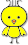

Petunjuk
Untuk menentukan lokasi, silakan cari lokasi anda berdasarkan nama desa, klik tombol GO!, lalu pindahkan marker/penanda () sesuai lokasi yang anda inginkan. Lalu klik tombol Cari, sistem akan memberikan informasi kesesuaian lokasi berdasarkan data di database. Anda juga dapat menggunakan GPS handphone anda dengan mengklik tombol
DETEKSI LOKASI DENGAN GPS!
Informasi
tes2
Rekomendasi Lokasi
| # | Nama Desa | Luas total (ha) | Luas berdasarkan kelas kesesuaian (ha) |
|---|---|---|---|
| 1 | Iwul | 432 | 12.3 |
| 2 | Parung | 353 | 15.7 |
| 3 | Pamagersari | 432 | 12.4 |
Statistik Peternakan
Usaha Peternakan Rakyat Perorangan di Kec. Parung
*berdasarkan data peternakan 2014, Disnakkan Kab Bogor
| # | Lokasi | Nama Pemilik Perorangan | Kapasitas Produksi (ekor) |
|---|---|---|---|
| 1 | Cogreg | Hendra Wijaya | 12,000 |
| 2 | Cogreg | Kwa Lan Moy | 9,000 |
| 3 | Cogreg | Salim Wijaya | 5,000 |
| 4 | Cogreg | Kwa Ceng Cwi/Eko | 9,000 |
| 5 | Waru | Gracia Subyakto | 4,000 |
Rumah Potong Unggas (RPU) swasta di Kab Bogor
*berdasarkan data peternakan 2014, Disnakkan Kab Bogor
| # | Nama Perusahaan | Alamat | Kapasitas Pemotongan / hari |
|---|---|---|---|
| 1 | PT Sierad Produce, Tbk | Desa Jabon Mekar, Kec Parung | 80,000 |
| 2 | PT Star Food/ UD Putra Mandiri | Desa Karang Asem, Kec Citeureup | 20,000 |
| 3 | PT Asia Afrika Poultry | Desa Pabuaran, Kec Gunung Sindur | 40,000 |
| 4 | PT Ciomas Adi Satwa | Desa Jampang, Kec Kemang | 20,000 |
| 5 | PT Maseng Satwa | Desa Claseng, Kec Cijeruk | 10,000 |
Rumah Potong Unggas (RPU) pemerintah di Kab Bogor
*berdasarkan data peternakan 2014, Disnakkan Kab Bogor
| # | Nama RPU | Alamat | Kapasitas Pemotongan / hari |
|---|---|---|---|
| 1 | RPU Cibinong | Kelurahan Cibinong, Kec Cibinong | 6,000 |
| 2 | RPU Ciseeng | Kec Ciseeng | 1,500 |